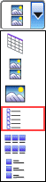
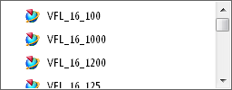

在部件库中搜索 NPS 为200的法兰
从管线部件库中选择 NPS 200 钢制焊颈法兰。
-
在机械管线布置工具条上的部件下拉菜单中，选择放置部件
 。
。 -
在重用库的文件夹视图框中，展开：
Routing Part Library (管线部件库)
→Piping Parts (管道部件)
→Flanges (法兰) -
选择节点 WN DIN 2633 ND 16。
-
在成员视图组中，选择列表。

-
在成员视图框中，浏览可用的部件列表。

这是一个相当长的列表，为了使您的选择更容易，您需要缩小列表范围，使之只出现 NPS 200 法兰。
-
在文件夹视图框中，右击 WN DIN 2633 ND 16 并选择搜索子项。
-
在管线布置重用搜索对话框中，点击重置
 。
。 -
在更新搜索准则下方，选择 NPS 行。
-
在 NPS 列表中，选择200。
-
选择 FLANGE_MATERIAL 行。
-
在 FLANGE_MATERIAL 列表中，选择 ST37–2。
-
点击确定。
现在成员视图框中只剩下三个可选部件了：
-
VFL_BI_16_200
-
VFL_MI_16_200
-
VFL_16_200
-